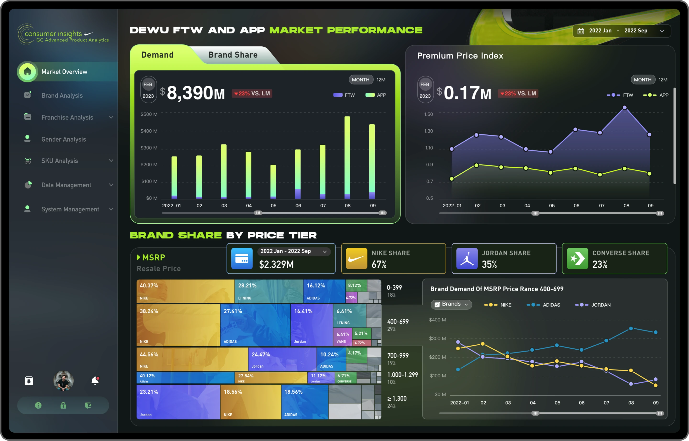
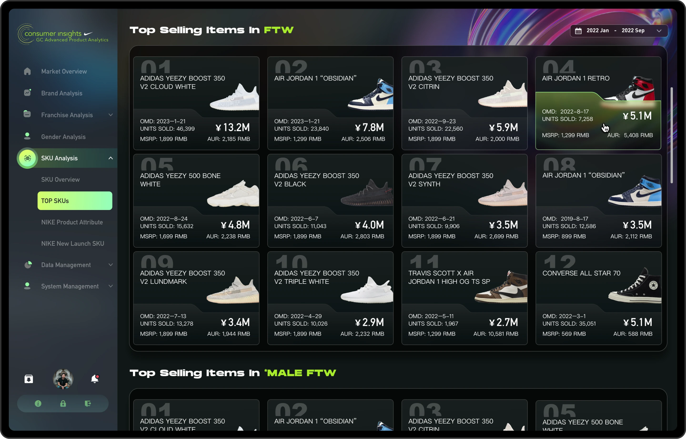
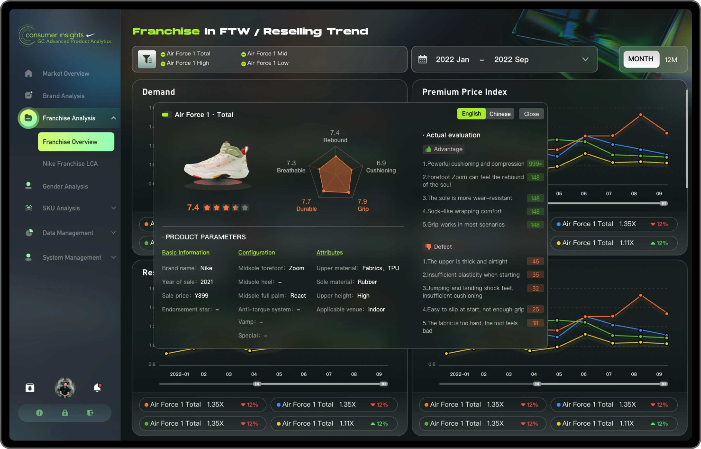
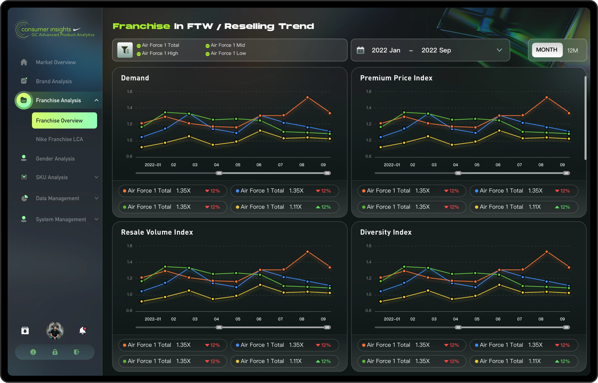
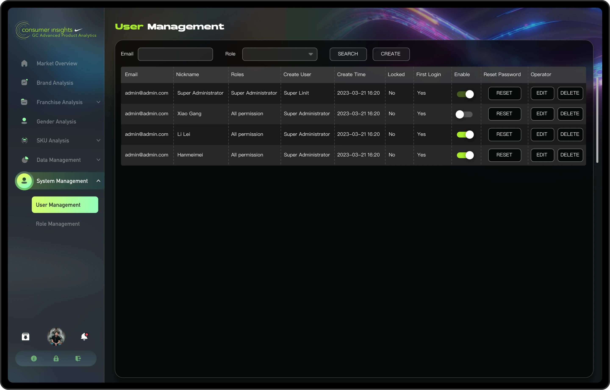
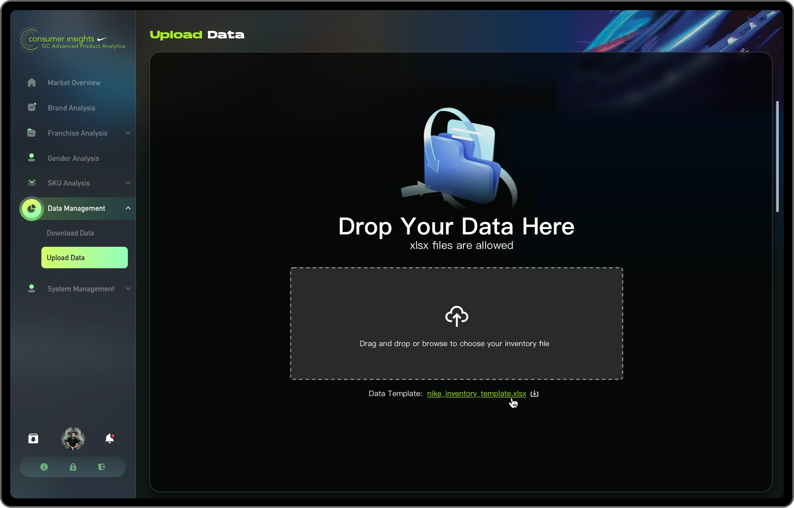
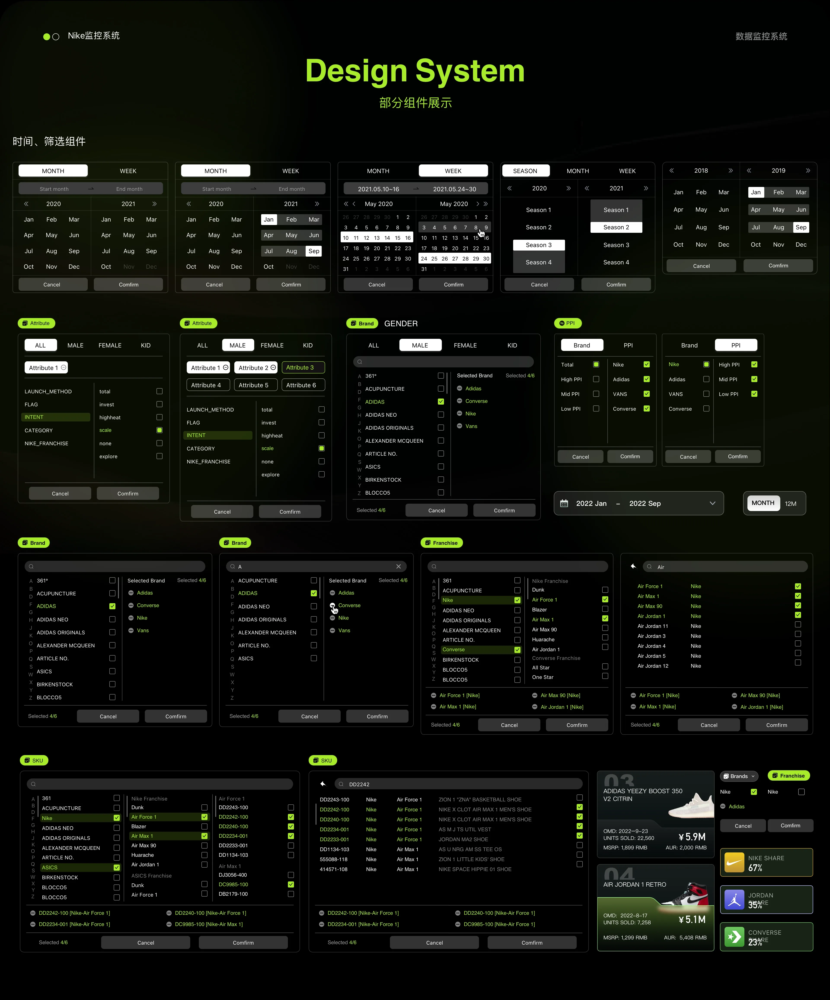
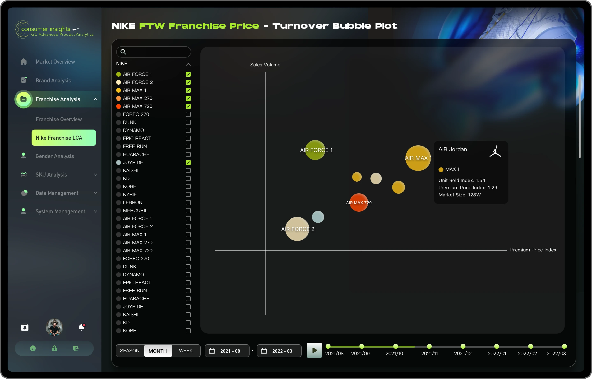
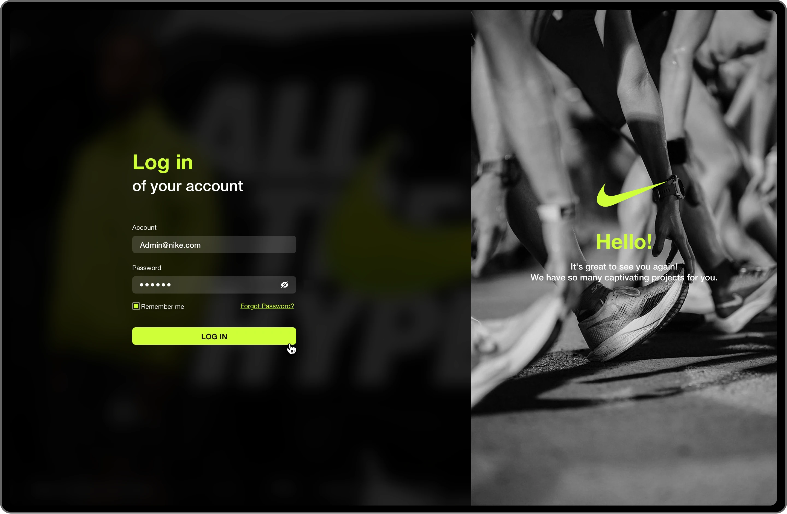

覆盖品牌表现、商品分析、价格带、门店与 franchise 等核心零售经营场景。
B2B SAAS · DASHBOARD · DESIGN SYSTEM
Nike 系统多品牌数据监控与分析平台
在深色高对比的数据语言下，我为 Nike 多品牌数据监控系统建立了一套更清晰的仪表盘秩序：既能支持管理层快速读数，也能让分析与运营角色在复杂指标之间高效切换。
DATAPerformance ·
Ranking · Analysis
Ranking · Analysis



需要在深色界面中处理大量图表、表格与筛选信息，同时保证长期查看时的效率与舒适度。
业务页面与 Design System 同步推进，让系统既有识别度，也更适合后续持续扩展。
PROJECT OVERVIEW
用更有秩序的深色数据语言，承接多品牌、多指标与多角色的复杂分析任务。
深色数据平台的难点，并不只是视觉风格，而是如何在高信息密度下依然保持清晰的阅读节奏。因此我以模块边界、色彩对比、KPI 权重与筛选组织为核心，重构市场表现、商品分析、排名与用户管理等页面，让“读数、比较、定位问题”成为一套更流畅的工作体验。
通过模块切分、荧光重点色与信息留白，提升长时间看数时的聚焦感。
从总览、趋势、商品、排名到 franchise 分析，形成完整的业务观察路径。
统一控件、表格、筛选器和图表表达，为后续页面扩展提供稳定基础。
FEATURED SCREENS

趋势对比页面横向观察不同指标的变化趋势。Top Ranking适合查看重点品类与排行表现。
Key Screen
核心数据看板与多品牌表现总览
主看板聚焦品牌份额、价格指数、Demand 与 Brand Share 等关键指标。通过清晰的导航、KPI 权重与图表对比，用户在进入系统后即可快速理解当前业务状态。
- 导航清晰，主看板阅读路径明确
- KPI 与图表并置，适合快速比较
- 荧光重点色强化关键信息识别

用户管理通过表格和状态开关实现高效维护。
数据上传通过大面积空状态引导导入操作。Key Screen
商品分析与运营管理页面
在商品分析、用户管理和数据导入等不同任务页面中，我保持同一套视觉与操作规范，让跨场景切换的学习成本更低，也让系统更像同一套产品。
- 商品分析更聚焦于单品与属性洞察
- 表格、开关和管理控件强调效率
- 导入与上传页面突出状态反馈与操作清晰度


Franchise 分析用于观察 franchise 业务的结构分布。
登录页延续品牌气质，入口体验统一。Key Screen
Design System 与可扩展设计基础
除了业务页面本身，我也同步整理控件、表格、筛选器与卡片的统一规则，让后续的新页面能够在相同语义下快速扩展，保证平台的一致性。
- 控件、筛选器与表格规范统一
- 提升设计复用率与开发协作效率
- 新页面扩展时仍可保持系统一致性
核心页面总览
以下页面展示 Nike 多品牌数据平台在设计系统、市场表现、趋势、商品分析、权限与登录等维度的核心界面。
总结与思考
Nike 数据监控系统的优化，不只是视觉升级，更是一套数据产品秩序的重建。通过更稳定的深色设计语言、更明确的页面结构和同步建设的 Design System，平台在复杂业务场景下获得了更高的可读性、可扩展性与品牌识别度。